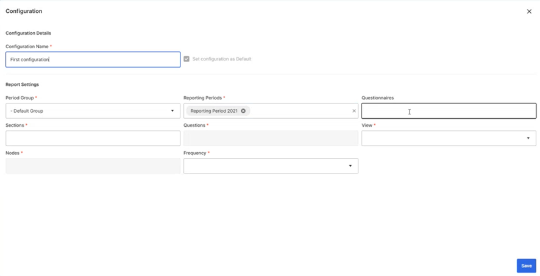
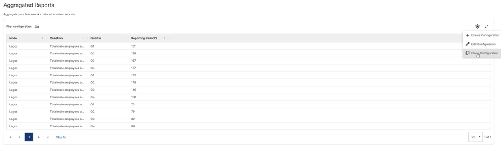

In Frameworks > Reporting > Aggregated Reports, from the New Configuration (Cog) icon at the top right, the user can click Create Configuration to aggregate Frameworks data into a custom report.
The first time you open Aggregated Reports, the grid is empty and a Configuration dialog box is displayed. You then configure the name and report settings (Period Group, Reporting Periods, Questionnaires, Sections, Questions, View, Nodes, Frequency etc.) on which the report will be based.

After clicking Save, the data will be aggregated according to what was specified in the configuration and displayed in the Aggregated Reports table.
After one or more reports have been created, from the New Configuration (Cog) icon at the top right, the user can choose Create Configuration, Edit Configuration, or Clone Configuration. Create Configuration enables you to create a brand new report. Edit Configuration enables you to update the settings of an existing report, which will overwrite its current configuration. Clone Configuration enables you to quickly create a similar configuration to an existing report by simply changing the name and editing a few parameters (adding questions, removing questions, changing the frequency, etc.); the original report will be retained with its original name.

When you have multiple aggregated reports, the selector at the top left can be used to switch between them.
Within the Configuration dialog box, next to the Configuration Name field, there is a ‘Set configuration as default’ check box. If selected for a particular configuration, that configuration will load and display first automatically whenever you open Aggregated Reports.
On the grid itself, the Ellipses icon next to any column name can be used for customization (to pin the column, adjust sorting, etc.). Also, each column can be dragged to a new location on the grid.
To delete a configuration, select ‘Edit Configuration’, then click the Delete Configuration button at the bottom left of the Configuration dialog box,